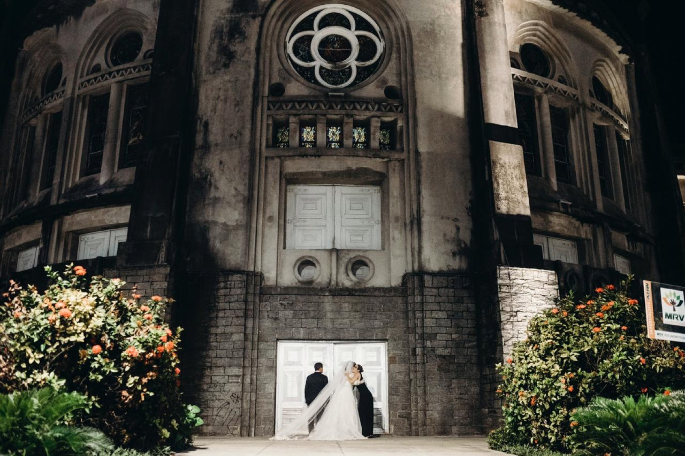
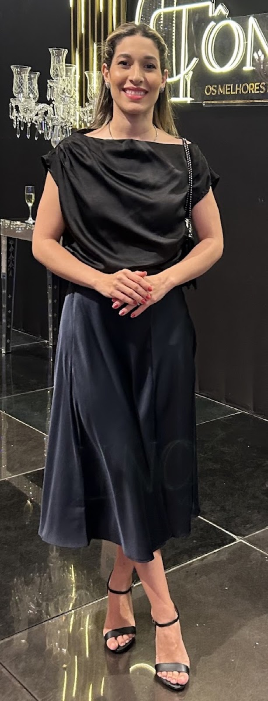
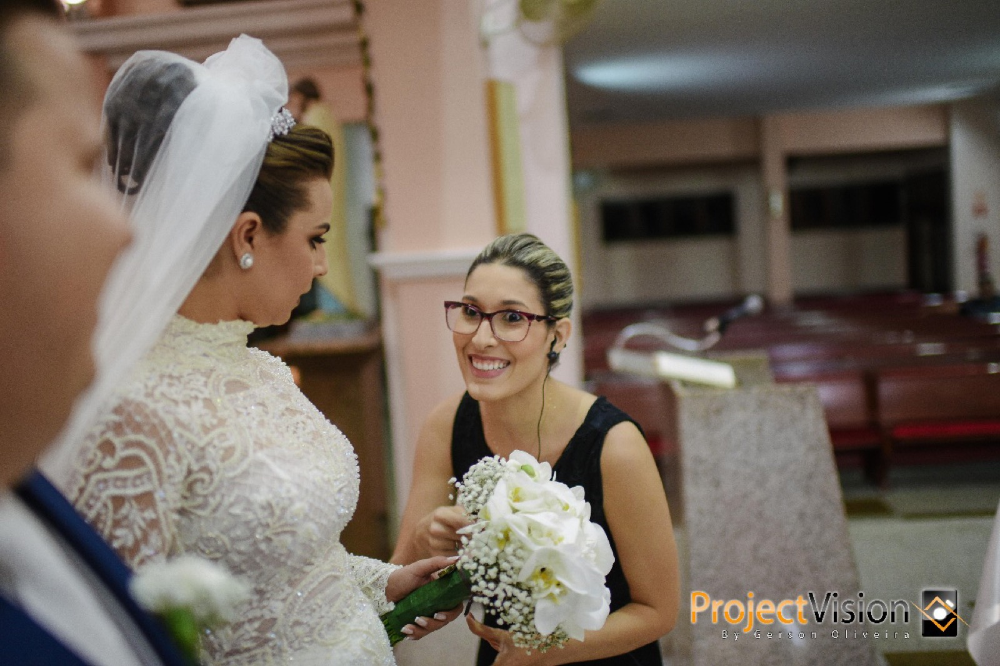

Assessoria e cerimonial para casais que querem chegar ao altar tranquilos, com alguém atento a cada detalhe do dia.

Casamento tem muitos detalhes, e quase todos acontecem ao mesmo tempo. O trabalho da Thais Bandeira é organizar esse caminho com os noivos e, no grande dia, estar ali para que cada momento aconteça na hora certa.
Enquanto ela conversa com fornecedores, confere horários e prepara a entrada, vocês ficam com o que importa: a emoção de casar diante de quem amam.
Thais Bandeira

O formato é escolhido na conversa, de acordo com a data e com o que vocês já organizaram.
Acompanhamento desde o começo do planejamento: etapas, fornecedores e cronograma até o dia.
Para quem já fechou os fornecedores e quer alguém organizando a reta final e o roteiro.
Presença no grande dia, conduzindo cerimônia e recepção para vocês só viverem o momento.
Responda 5 perguntas e veja um cronograma sugerido. No final, suas respostas vão organizadas para o WhatsApp da Thais.
Contem a data e o que estão imaginando. A Thais responde pelo WhatsApp.